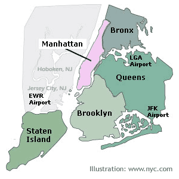
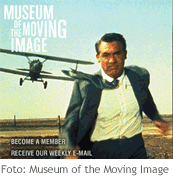

The five Boroughs of New York sity
Not only manhattan
New York is more than the small Island Manhattan. There are more boroughs that are representing New York City, who we will presented below. When we are talking about New York our first thought is Manhattan and this is where most people travel to. It is here the big range of activities are for you as a tourist, shopping, theatres, sights and the atmosphere of New York that you recognize from TV and from movies.
New York consists of 5 Boroughs Manhattan, Bronx, Queens, Brooklyn and Staten Island.
Manhattan
The small Island in the middle of the hart of New York. The Island is approx 12 mile long and as widest 2.5 miles. Manhattan is separated by the Hudson River on the west side, by East River on the east side and by Harlem River in the north. It is here you will find most of the well-known sight, all the high skyscrapers, shopping, museums and all those things you are expecting from a big city with all its traffic and people.
Downtown
Between 14th Street and the south tip of the Island. Here you will finda Wall Street and the finincial districts. Here is the centre of power, with the relaxing part of East Village, Greenwich Village, Chinatown, Little Italy and Soho.
Midtown
Between 14th Street and 59th Street. The district reach the whole way up to the south entrance ofCentral Park. Here you will find a lot of department stores and shops, Empire State Building and more famous places as for example:Rockefeller Center, Broadway, Fifth Avenue och Times Square.
Uptown
Everything north of 59th Street. Here you will find Central Park and more museums. Here is a mix with the rich and poor. It is an area with contrast. Stylish residential area and the more stereotyped area, Harlem.
Bronx
The borough exactly north of Manhattan, it is the only borough that is not an Island or part of an Island. Here you will find Yankee Stadium, New York Botanic Garden, Bronx Zoo and Wave Hill. A lot of green areas. The area is inspired from the Carribean as there are many people from Latin America living here. This will show both in the food and the music. Here is also a lot of interest if you are fascinated in history.
The history says that Bronx have got it´s name from a Swedish sailor and settler Jonas Bronck that arrived here around year 1639. People are speculating if this is true or not, sometimes they are saying that Jonas is Danish and sometimes Dutch. If you search on his name on google you will get a lot of different theories.
Queens
The borough east of Manhattan and Bronx. Here you will find two of the cities biggest airports JFK and LaGuardia. This area is a world of it´s own, with big mixture of nationalities. You will find Greeks in Astoria, Polish in Maspeth, Irish in Woodside and Colombians in Jackson Heights. This is also a place for movie production at Long Island City´s Silvercup Studios. Here they have recorded TV-series as "Sex in the City" and "Sopranos" and movies like "Godfather III", "When Harry met Sally", "Romancing the Stone", "Working Girl" och "Men In Black" etc. Maybe you will ran into Woody Allen, Al Pacino or Robert DeNiro. More film history you can find at Museum of the Moving Image.
Brooklyn
South east of Manhattan and at the other side of the East River. Also here you will have a mixture of all the different nationalitites of the world. Among other things you will find Williamsburg, Coney Island Park, Prospect Park Zoo and New York Aquarium. Even in Brooklyn you will find a botanic garden - Brooklyn Botanic Garden. Are you interested in culture you will find one of the US biggest museum The Brooklyn Museum of Art, with one of the worlds largest collections of Egyptian objects. Brooklyn is more or less well known for it´s roller coaster built in wood "The Cyclone" built in year 1926, today it is a social history memorial for New York. Take a walk over Brooklyn Bridge and you will get a great view over Manhattan and the skyscrapers.
Staten Island
South of Manhattan you will find this Island. You will get to Staten Island by the free ferry, Staten Island Ferry (from downtown Manhattan) and from the bridge from Brooklyn and New Jersey. Here the area are dominated by cosy residential districts. You will also find the historic Richmond Town , Tottenville Beach and cosy green areas and parks ideal for hiking.